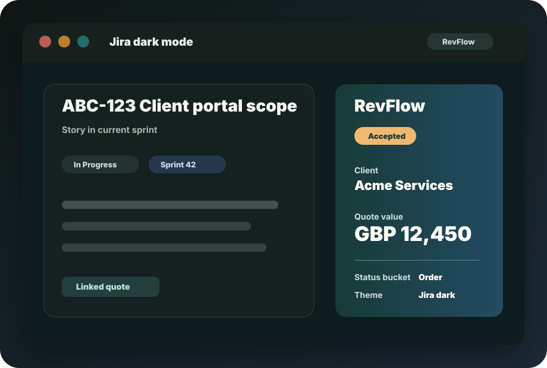

Start from Jira work
Create and manage quotes from the RevFlow project page or the Jira issue panel, then keep linked quote references visible beside the delivery scope.
RevFlow by Quotaurus
RevFlow helps Jira Cloud teams turn delivery work into controlled revenue: create quotes, link them to Jira issues, report on WIP and invoiceable value, catch unquoted sprint work, and configure the workflow to match each project.

The problem
Jira holds the scope, but commercial context often lives in spreadsheets, PDFs, email threads, and finance exports. RevFlow keeps quote records, issue links, status, forecast dates, PO numbers, line items, and reporting close to the work that drives the revenue.
How it works
Create and manage quotes from the RevFlow project page or the Jira issue panel, then keep linked quote references visible beside the delivery scope.
Project admins can map Jira fields, statuses, issue types, currency, tax, quote items, clients, revenue streams, email options, and access rules before rollout.
Configure quote statuses and work buckets for order, WIP, invoiceable, closed, and lost value so reports reflect your real Jira workflow.
Reporting highlights current and next sprint work that has no quote coverage, helping delivery teams catch revenue risk before work moves too far.
Generate client-facing quote PDFs. If email sending is enabled, RevFlow can use Mailgun or SendGrid and store recipient and sent-date metadata on the quote.
Create monthly draft quotes from recurring templates for retainers, subscriptions, support packages, and other scheduled service work.
Product tour
Admins are guided through field mappings, statuses, company details, currencies, quote items, clients, features, email, and access.
Linked quotes stay visible from the Jira issue that created or receives the work.
Filter by status, system, created date, and search text from the project RevFlow page.
Use quote funnel, value over time, top clients, systems, revenue streams, and completion-month reporting.
Review missing quote coverage for current and next sprint work using your configured issue types.
RevFlow enables Atlassian theme support and includes dark-mode styling for forms, tables, status pills, reports, and wizard screens.
Product visuals

First-run setup helps admins map RevFlow to Jira fields, statuses, work buckets, currencies, features, email providers, and access permissions before wider rollout.

Reports bring quote funnel, WIP, invoiceable value, completion month, top clients, top systems, revenue streams, and missing quote coverage into the Jira project view.

RevFlow enables Atlassian theme support and includes dark-mode styling for its panels, forms, tables, reports, status pills, and setup screens.
Who it is for
Quote new scope, change requests, and retained work from the Jira tickets delivery teams already manage.
Control recurring quote drafts, one-off client requests, systems, PO references, and forecast dates from Jira.
See accepted, WIP, invoiceable, closed, and missing-coverage signals without waiting for finance spreadsheets.
Roll out a configurable Forge app with project-level setup, permission modes, import/export setup, and no separate CPQ platform.
Outputs
| Product | Rate | Qty | Total |
|---|---|---|---|
| Support package | GBP 750.00 | 1 | GBP 750.00 |
| Implementation work | GBP 95.00 | 8 | GBP 760.00 |
SubtotalGBP 1,510.00
VATGBP 302.00
TotalGBP 1,812.00
Quote output can stay useful after the PDF is sent.
PDF generation works without email sending. Email sending is optional and depends on configured Mailgun or SendGrid settings.
Positioning
| Alternative | Common problem | RevFlow positioning |
|---|---|---|
| Spreadsheets | Quote value and delivery scope drift apart. | Quotes stay linked to Jira issues, statuses, projects, systems, and clients. |
| Generic CPQ | Too heavy for delivery teams that live in Jira. | Focused quote-to-delivery controls inside Jira Cloud views. |
| Manual PDFs | Version, status, and sent records are hard to track. | PDFs sit beside quote status, quote history, linked work, and reporting data. |
| Finance-only reporting | Teams find revenue gaps after the work has happened. | Missing quote coverage and WIP reporting surface risk while work is still in Jira. |
| Separate quoting tools | Commercial context leaves the delivery workflow. | RevFlow runs from Jira project and issue views with configurable project setup. |
ROI
If a team creates 40 quote records per month and spends 20 minutes on each one chasing scope, checking status, rebuilding PDFs, and reconciling finance exports, that is over 13 hours per month of admin. RevFlow is designed to reduce those handoffs by keeping the commercial workflow in Jira.
Admin confidence
FAQ
Yes. Quotaurus is the company. RevFlow is the Jira Cloud app.
Yes. RevFlow is built as an Atlassian Forge app for Jira Cloud project and issue views.
Yes. Project admins can complete a first-run setup wizard and relaunch it later from settings.
Yes. RevFlow enables Jira theme support and includes dedicated dark-mode styling.
Yes. Open quotes can be linked to Jira issues and referenced from issue panels.
Yes. PDF generation is separate from optional Mailgun or SendGrid email sending.
The configuration supports VAT settings and GBP, USD, and EUR currency options.
Yes. Recurring templates can generate monthly draft quotes on a selected billing day.
Yes. RevFlow includes setup import and export for configuration review and rollout.
Next step
Review pricing and Marketplace access, read the setup guide, or contact Quotaurus before rollout.